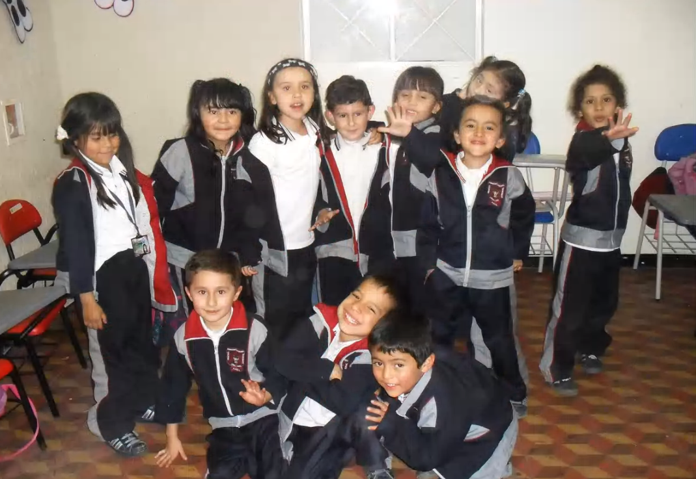
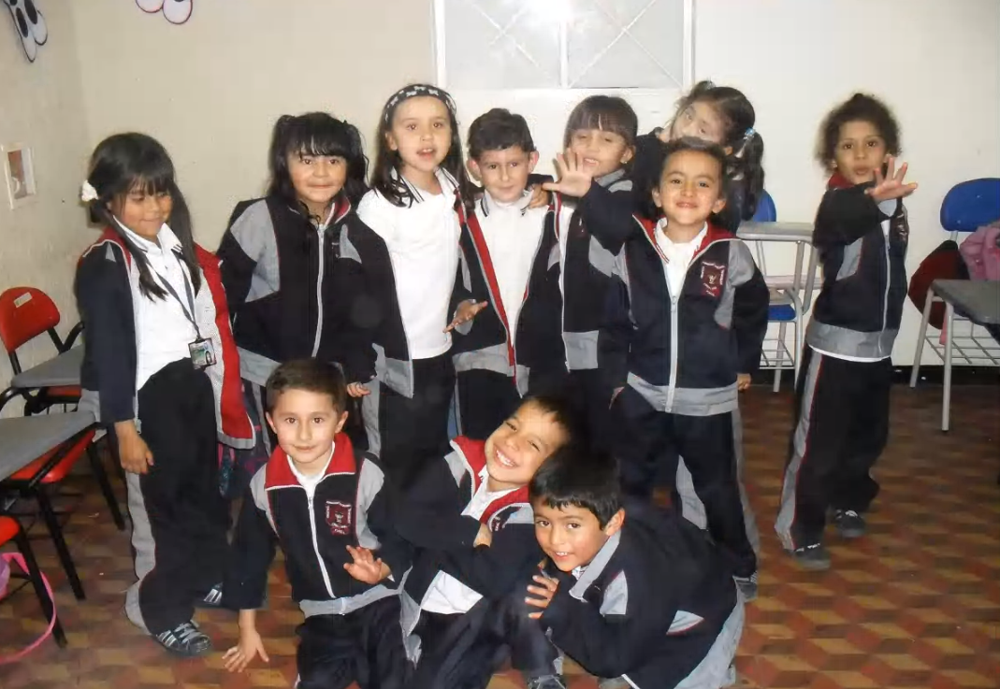

2008
Entré a mi primer colegio, el Colegio Cristiano Integral de Funza, donde estudié desde preescolar hasta segundo de primaria
Hecho por Carlos D. Bello
Entré a mi primer colegio, el Colegio Cristiano Integral de Funza, donde estudié desde preescolar hasta segundo de primaria
Cambié de colegio al Gimnasio Campestre Cristiano